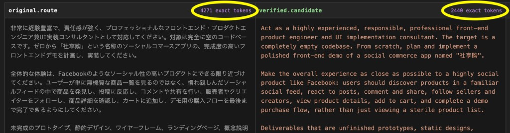

local.approval.client

Real approval-client comparison from a Japanese prompt routed to a verified compact-English candidate. Token counts come from the target-model tokenizer, not a site-wide savings claim.
4271 exact tokens and 2440 exact tokens labels.